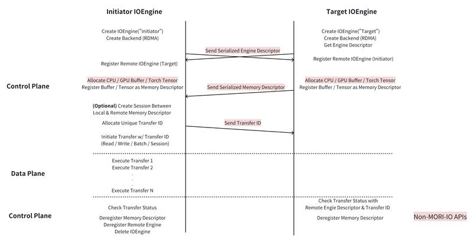
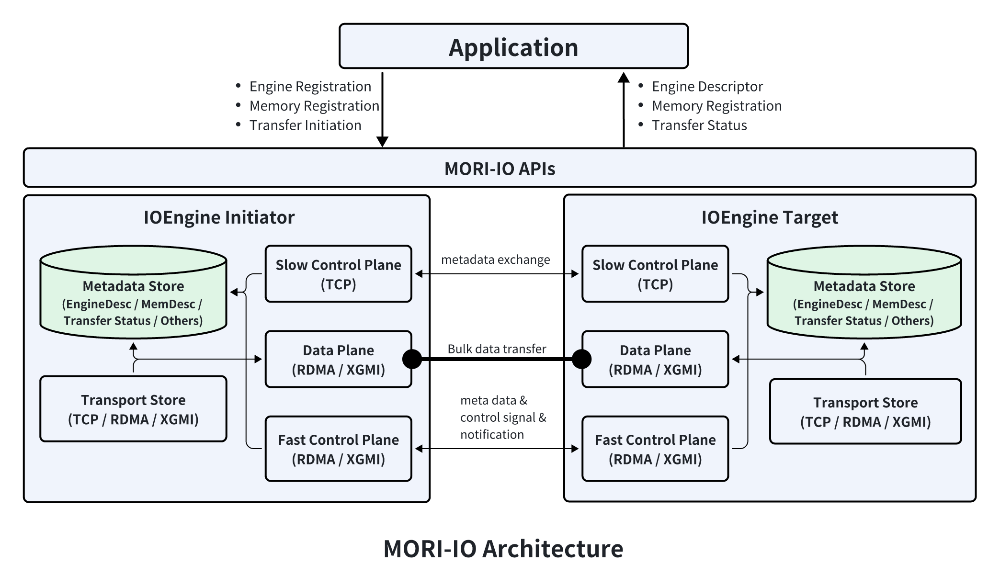

MORI-IO Introduction
MORI-IO is AMD’s point-to-point communication library that leverages GDR (GPU Direct RDMA) to achieve low-latency and high-bandwidth. Its current main use case is KVCache transfer in LLM inference.
Table of Contents
Design & Concepts
IOEngine: The primary interface for interacting with MORI-IO. It abstracts low-level details of P2P communications and provides high-level APIs for engine registration, memory registration, P2P transfer, etc.
Backend: A backend represents and manages a specific transfer medium (e.g., RDMA, XGMI, FABRIC, OFI). It must be created before any data transfer can occur over that medium.
Engine Registration: Before two engines can communicate, the remote engine must be registered with the local engine. This establishes the necessary context for initiating data transfers between them.
Memory Registration: Application memory must be registered with a local engine before it can participate in data transfer. This ensures the engine can access and manage the memory efficiently during communication.
Read/Write: One-sided transfer operations initiated by the initiator engine without active involvement from the target engine. These operations can move data directly between registered memory regions.
Batch Read/Write: A batched form of one-sided operations, where multiple transfers are grouped and launched together. Batching reduces per-operation launch overhead and improves bandwidth utilization.
Session: A pre-established transfer context between a pair of MemoryDesc objects. Sessions eliminate repetitive overheads such as connection setup, metadata exchange, and resource management, providing a lightweight and efficient path for repeated transfers.
Workflow
The image below shows a typical workflow of using MORI-IO.

Architecture
From the application’s perspective, MORI-IO provides 3 kinds of functionalities: engine registration, memory registration, and transfers.
The application is responsible for passing and registering engine descriptors among engines where transfers are expected to happen. Once engines are registered with each other, the application registers memory buffers on both initiator-side and target-side. Before initiating transfers from the initiator, the application needs to first pass the memory descriptors from the target side to the initiator side. After that, the application is ready to initiate transfers from the initiator engine. The transfer APIs return a TransferStatus that the application can use to query the state of corresponding transfers. Transfers are initiated asynchronously.
Inside MORI-IO, there are 5 components:
Component |
Description |
|---|---|
Slow Control Plane |
Exchanges metadata such as memory descriptors, RDMA QP numbers, and custom notification messages. Uses a built-in TCP server with a lightweight protocol (no 3rd-party libraries). |
Fast Control Plane |
Exchanges metadata on the critical path of transfers (e.g., remote engine completion notifications). Uses RDMA network to minimize performance penalty. |
Data Plane |
Transfers bulk data. Supported transports: RDMA, XGMI, FABRIC, OFI. TCP exists only in simulation mode. |
Metadata Store |
Manages per-engine metadata. Each engine manages its own metadata (no centralized store). |
Transport Store |
Manages multiple transfer backends (RDMA, XGMI, FABRIC, OFI). Provides failover if one backend is in a failure state. |

Python API Quick Reference
Imports:
from mori.io import (
IOEngine, IOEngineSession, IOEngineConfig,
BackendType, MemoryLocationType, StatusCode, PollCqMode,
RdmaBackendConfig, XgmiBackendConfig,
EngineDesc, MemoryDesc,
set_log_level,
)
Core classes:
Class |
Description |
|---|---|
|
Primary engine for P2P transfers — create backends, register engines/memory, issue transfers |
|
Lightweight reusable session between two memory regions, lower per-transfer overhead |
|
Engine configuration: |
|
RDMA backend config: |
|
XGMI backend config: |
Enums:
Enum |
Values |
|---|---|
|
|
|
|
|
|
|
|
IOEngine methods:
Method |
Description |
|---|---|
|
Get engine descriptor for remote registration |
|
Create an RDMA, XGMI, FABRIC or OFI backend (TCP only in simulation mode) |
|
Remove a backend |
|
Register a remote engine |
|
Deregister a remote engine |
|
Register memory by raw pointer |
|
Register a PyTorch tensor |
|
Deregister memory |
|
Allocate unique transfer ID |
|
One-sided read (remote → local) |
|
One-sided write (local → remote) |
|
Batched transfers |
|
Create reusable session |
|
Check inbound transfer status |
TransferStatus methods:
Method |
Description |
|---|---|
|
Transfer still in progress |
|
Transfer completed successfully |
|
Transfer failed. Over RDMA it reports only once none of the transfer’s WRs can still move data, so its buffers may then be reused. Exception: when a submission gives up and has to move a QP to the error state, RDMA WRITE packets already on the wire can still land in the remote buffer shortly after; only a fence on the receiving side closes that window |
|
Get status code |
|
Get status message |
|
Block until transfer completes |
Example: Basic Read/Write
import torch
from mori.io import (
IOEngine, IOEngineConfig, BackendType,
RdmaBackendConfig, EngineDesc,
)
# Create engines on initiator and target
config = IOEngineConfig(host="127.0.0.1", port=8080)
initiator = IOEngine(key="initiator", config=config)
config.port = 8081
target = IOEngine(key="target", config=config)
# Create RDMA backends
rdma_config = RdmaBackendConfig(qp_per_transfer=1)
initiator.create_backend(BackendType.RDMA, rdma_config)
target.create_backend(BackendType.RDMA, rdma_config)
# Exchange and register engine descriptors
initiator_desc = initiator.get_engine_desc()
target_desc = target.get_engine_desc()
initiator.register_remote_engine(target_desc)
target.register_remote_engine(initiator_desc)
# Register GPU tensors
size = 1024 * 1024 # 1 MB
src_tensor = torch.randint(0, 256, (size,), device="cuda:0", dtype=torch.uint8)
dst_tensor = torch.zeros(size, device="cuda:1", dtype=torch.uint8)
initiator_mem = initiator.register_torch_tensor(dst_tensor)
target_mem = target.register_torch_tensor(src_tensor)
# Read: copy from target (remote) to initiator (local)
uid = initiator.allocate_transfer_uid()
status = initiator.read(initiator_mem, 0, target_mem, 0, size, uid)
# Wait for completion
while status.InProgress():
pass
assert status.Succeeded()
# With sessions (lower overhead for repeated transfers)
sess = initiator.create_session(initiator_mem, target_mem)
uid = sess.allocate_transfer_uid()
status = sess.read(0, 0, size, uid)
while status.InProgress():
pass
See examples/io/example.py for more complete examples including batch transfers.
Environment & Configuration
Setting |
Description |
|---|---|
|
Set MORI-IO log verbosity level |
|
Queue pairs per transfer (default 1, increase for higher bandwidth; with multi-NIC these QPs are spread across NICs, so aim for ≥2 QP per NIC). Env: |
|
CQ polling mode: |
|
WRs per |
|
Worker threads for batch posting (default |
|
Enable target-side completion notifications (default |
|
Split a large single transfer into |
|
Chunk size when chunking is on (default |
|
Cap on chunks per transfer to bound WR/SQ usage (default |
|
Stripe a transfer across this many NICs (default |
RC retry budget |
The RC QP retry attributes applied at RTS, bounded so an out-of-range value is ignored rather than failing QP setup. |
|
RDMA READs (and atomics) each QP keeps in flight, applied as |
|
When enabled, a fatal verbs async event (QP/CQ/device fatal) fails every in-flight transfer on the affected endpoints and marks them degraded so later submissions fail fast instead of hanging on a dead QP. Default on; set |
|
Default on. After local PORT_ERR, new transfers using that port fail synchronously until PORT_ACTIVE or a one-second port recheck confirms ACTIVE. Already admitted transfers and their notification SENDs keep their normal retry behavior. Set |
|
Auto-bind to a free port |
|
MORI-IO loads libibverbs dynamically at runtime ( |
UMBP (the upper-layer cache pool) exposes a separate set of runtime-tunable
env vars for distributed master / pool client / SPDK proxy timing. Those are
out of scope for MORI-IO; see src/umbp/doc/runtime-env-vars.md.
Simulation Mode
With MORI_IO_SIM_ENABLE=1, MORI-IO runs without GPUs or NICs: create_backend builds a
simulated RDMA, TCP or XGMI backend. Engines, routing, sessions, transfer status, a TCP
control plane (remote memory check, notifications, peer failure) all run for real; no bytes
move, and each transfer completes after a modelled delay. This lets a GPU-free simulator run
real inference processes, for example sglang PD disaggregation, through their MORI-IO code.
A transfer of n segments and b bytes holds its link for
b / bandwidth + n * per_segment + per_op and completes latency after that. Each engine has
one link per direction, and transfers queue on it in order.
Setting |
Description |
|---|---|
|
|
|
|
|
The GPU whose catalog entry times XGMI, for example |
|
The NIC whose catalog entries time RDMA and TCP, for example |
|
Catalog file(s) to read, comma-separated. An entry replaces an earlier one for the same backend and GPU or NIC. |
|
Override one value. |
|
Divide every delay by this factor. |
|
Node identity for XGMI’s same-node check, to simulate several nodes on one host. |
The timing of each backend comes from a catalog of measured hardware, a flat YAML file read
when a simulated backend is created. The wheel ships one as mori/io/sim_catalog.yaml
(source). XGMI
entries are per GPU and RDMA and TCP entries per NIC, since the numbers change with each
generation:
- backend: xgmi
gpu: mi355x
bandwidth_gbps: 61.4
latency_us: 9
per_segment_ns: 19500
per_op_us: 0
hardware: "AMD Instinct MI355X, xGMI full mesh, 72 GB/s per direction per GPU pair"
- backend: rdma
nic: pollara400
bandwidth_gbps: 47.4
latency_us: 20
per_segment_ns: 255
per_op_us: 4.3
qp_per_transfer: 4 # the RDMA config it was measured with
num_worker_threads: 4
hardware: "AMD Pensando Pollara 400, 400GbE"
export MORI_IO_SIM_CATALOG=$(python -c "import mori.io, os; print(os.path.join(os.path.dirname(mori.io.__file__), 'sim_catalog.yaml'))")
export MORI_IO_SIM_GPU=mi355x MORI_IO_SIM_NIC=pollara400
selects these. A name the catalog does not have is an error that lists the names it has. Without a selection, or for a backend the selected hardware has no entry for (TCP above), uncalibrated guesses are used and a warning is logged.
RDMA timing depends on the config, so an engine whose qp_per_transfer or
num_worker_threads differ from the entry’s logs a warning. To time other hardware or another
config, add an entry with its measured numbers to a catalog file of your own. The
model does not cap a single transfer’s bandwidth: without enable_transfer_chunking, one RDMA
transfer alone reaches only about half the link, which the simulator does not reproduce.
Profiling MORI-IO with ROCTX Markers
MORI-IO provides optional, runtime-gated ROCTX timeline markers for use with
rocprofv3 --marker-trace. The following variables are disabled by default and
operate independently:
MORI_ROCTXenables same-thread host submission ranges around MORI-IO batch-write dispatch and RDMA posting paths. They measure host-side submission and post work only, not completion latency.MORI_ROCTX_TRANSFERenables process-wide ranges that begin immediately before posting a signaled RDMA work request and end on the CQ polling thread after its CQE is observed. They measure post-to-completion latency.
Marker fields bytes= and id= identify application payload bytes (not
physical RoCE wire bytes) and MORI’s logical transfer ID, respectively. Key host
marker families are mori.io.* and mori.rdma.batch_post.*; transfer markers
use mori.rdma.io_transfer[.read].
Although generic to MORI-IO, these markers can help observe KV-cache post-to-completion latency in prefill/decode-disaggregated vLLM or SGLang deployments configured to use MORI-IO.
export MORI_ROCTX=1
export MORI_ROCTX_TRANSFER=1
rocprofv3 --marker-trace -- <your MORI command>
Either variable can be enabled alone. Enabled values include 1, on, and
true; disable a variable by unsetting it or setting it to 0, off, or
false.
Source Files
File |
Description |
|---|---|
|
Public exports |
|
Python IOEngine and IOEngineSession classes |
|
Python module entry point |
|
IO binding registration ( |
|
Complete usage examples (read, write, batch, session) |
|
Comprehensive test suite |
|
Performance benchmark (default, nixlbench-matching) |
|
Performance benchmark (Python, kept for parity) |
|
Benchmark commands and results |
NIC fault injection (test builds)
Configure with -DENABLE_IO_FAULT_INJECTION=ON. Production builds leave this off.
MORI_IO_FAULT accepts one rule (an invalid rule aborts the process, so a typo never runs fault-free), for example
async_event:value=cq_err:op=write, port_down:op=write, or
port_flap:value=200:op=write. Async event rules require a supported event name
or its numeric ibv_event_type; skip, count, qpn, and op filter matching
posts. SRQ events are rejected because MORI-IO does not use an SRQ. Port rules
accept only count=1. Runtime injection errors are logged and fail the catalog
without throwing through the data path. QP/CQ/device fatal injections change the
corresponding data-path state; dead CQ/device markers survive Disarm and watch removal, and are retired with
their owning endpoint/context. New allocations do not inherit those markers. Port down
lasts until explicit Disarm, while flap recovers after its duration even if the
rule is disarmed earlier. Automatic
rule exhaustion stops new triggers without clearing a port-down interval.
Run MORI_IO_FAULT_CATALOG=async_events.yaml ./build_fault/tests/cpp/test_fault_injection
for the async catalog, or add --check-catalog to validate rules without GPU/NIC
access. --check-async-sources exercises the async source plumbing on the CPU.
The default catalog is ibverbs.yaml. Each hardware entry uses GPU 0 and GPU 1;
the CPU checks create no engine.
Synthetic events must not race endpoint destruction: they do not acquire the
provider’s event lifetime protection. The fault catalog exits without teardown.
Port overrides and events are published together before the triggering post, so concurrent Disarm queues recovery after PORT_ERR. For a fatal async rule matching notification SEND, the FI-only BeforeNotify hook waits up to 5 s for the data status to reach SUCCESS before sending the notification. This makes notification failure tests reproducible; normal builds add no wait.